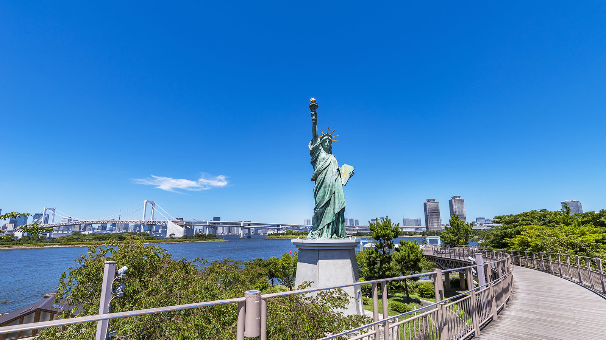

English
English
 简体中文
简体中文
スカイツリー、浅草エリア
東京に来たら、スカイツリー、浅草は絶対に訪ねる場所です。

スカイツリー、浅草エリア
目的地は押上駅です。押上駅（スカイツリー）からB3出口・A2出口より すぐ東京ソラマチという商業建物に入ります。
その建物の４Fに上ると スカイツリーの入口に到着します。そこから入場券を購入して、展望台に行きます。
スカイツリーのフロアガイド

東京スカイツリーは世界一高いタワーとして「ギネス世界記録」に認定されている。高さ450mのところから関東平野を俯瞰できる。
買い物しない場合は、スカイツリーの観光は2時間程度で終了します。
子ども連れの家庭は、スカイツリーの隣にあるすみだ水族館を観光できます。
すみだ水族館
すみだ水族館とは いきものたちに会いに行く、公園みたいな水族館。 すみだ水族館は、いままでの水族館とは、ちょっと違います。水槽前のイスに座り、すっぽりと水のゆらぎにつつまれたり。いきものを眺めながら、カフェでおしゃべりをしたり。自由に気ままにいろいろなすごし方ができる、公園のような水族館です。
浅草エリア
スカイツリーから歩いて15分程度で浅草に行けます。
途中店に入ってランチ食べることをお勧めします。
都内最古の寺院「浅草寺」
東京を代表する645年に創建された都内最古の仏教寺院が「浅草寺」。日本で最も有名な観光スポットの一つであり、国内外から多くの観光客が訪れます。
仲見世通り
雷門から浅草寺へ続く全長約250ｍの商店街が「仲見世通り」。

お台場
浅草から船を乗って、お台場に行けます。
水上バスの時刻を事前に調査して、間に合うように事前にチケットを購入する準備しましょう。
万が一間に合わない場合は、電車でもお台場海浜公園駅に行けますので、ご安心ください。
水上バスの時刻


お台場海浜公園

都内屈指の夕暮れ・夜景スポット 昼間の景色も素晴らしいのですが、夕日に染まるお台場海浜公園の景色は一段と優雅で美しく、あらゆる人の心を癒します。 また、夜になるとレインボーブリッジを始め、東京タワーや大観覧車などがライトアップされ、東京ベイエリアを代表する夜景が楽しめます。
自由の女神像
2000年12月から常設されている像の高さは、台座を除いて約11m、重さは約9tあり、ニューヨークの7分の1サイズです。
フジテレビ
270度のパノラマ展望台が印象的!!
お台場を代表するランドマーク。
おなじみの丸いシンボルは「はちたま」という
名前の展望台で、中に入ることができます。
レインボーブリッジや東京タワー、
東京スカイツリーなど、270度パノラマ風景が
見られます。

日本科学未来館
子ども連れの家庭は、日本科学未来館を見に行きましょう。
日本科学未来館は、先端の科学技術を体験できる国立のサイエンスミュージアムです。